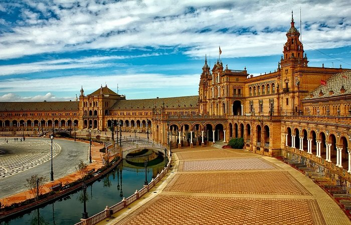
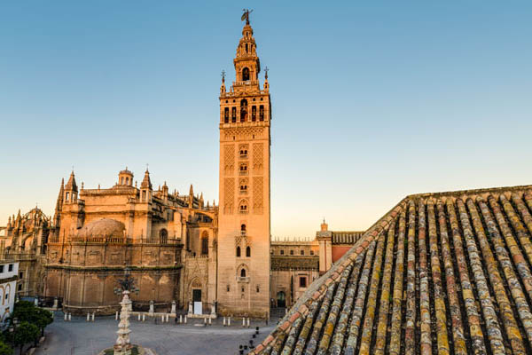
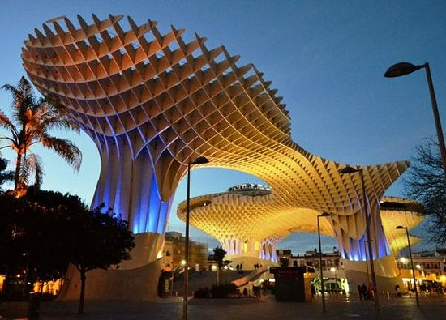

SEVILLA
Sevilla es la capital de la región Andalucía, en el sur de España. Es famosa por su danza flamenco, particularmente en su barrio de Triana. Los principales sitios icónicos incluyen el complejo de castillos adornados del Alcázar, construido durante el imperio almohade morisco, y la Plaza de los Toros de la Maestranza, del siglo XVIII. En la catedral gótica de Sevilla, está la tumba de Cristóbal Colón y un minarete transformado en campanario, el Giraldo.

Andrea: Sevilla, una ciudad rebosante de encanto antiguo, fue originalmente fundada como una ciudad romana y ahora es sede de tres sitios declarados Patrimonio de la humanidad por la UNESCO. El complejo del palacio Alcázar es un extraordinario collage de estilos arquitectónicos, y la catedral te va a impresionar por su belleza y por ser el lugar de sepultura de Cristóbal Colón. El Metropol Parasol es la estructura de madera más grande del mundo, una combinación masiva de cuadrículas y espirales donde se encuentran un mercado y una terraza con observatorio.
ELa Plaza de España es un conjunto arquitectónico enclavado en el parque de María Luisa de la ciudad de Sevilla. Fue realizado por el arquitecto Aníbal González. Se construyó entre 1914 y 1929 como el edificio principal, y el de mayor envergadura, de la Exposición Iberoamericana de 1929.
La catedral de Santa María de la Sede se encuentra en Sevilla. Es de estilo gótico. Se trata de la catedral más grande del mundo. La Unesco la declaró en 1987, junto al Real Alcázar y el Archivo de Indias, Patrimonio de la Humanidad y, el 25 de julio de 2010, Bien de Valor Universal Excepcional.
Giralda es el nombre que recibe la torre campanario de la catedral de Santa María de la Sede de la ciudad de Sevilla, en Andalucía (España). Los dos tercios inferiores de la torre corresponden al alminar de la antigua mezquita de la ciudad, de finales del siglo XII, en la época almohade, mientras que el tercio superior es una construcción sobrepuesta en época cristiana para albergar las campanas. En su cúspide se halla una bola llamada tinaja sobre la cual se alza la estatua de bronce que representa el Triunfo de la Fe y que tiene función de veleta, ciertamente hermosa, el Giraldillo, inicialmente llamada Giralda, hasta que a toda la torre el pueblo dio este nombre.
La Torre del Oro de Sevilla es una torre albarrana situada en el margen izquierdo del río Guadalquivir, en la ciudad de Sevilla, comunidad autónoma de Andalucía, España, junto a la plaza de toros de la Maestranza. Su altura es de 36 metros.
El proyecto Metropol Parasol también denominado de forma oficial desde su apertura como Setas de Sevilla es una estructura en forma de pérgola de madera y hormigón ubicada en la céntrica plaza de la Encarnación de la ciudad de Sevilla, en la comunidad autónoma de Andalucía (España). Cuenta con unas dimensiones de 150 metros de largo, 70 metros de ancho y una altura aproximada de 26 metros. Su base alberga un mercado tradicional y locales de restauración en la planta baja, una plaza de espectáculos y el museo arqueológico Antiquarium. La estructura se corona con una terraza y un mirador que ofrece una vista panorámica del casco antiguo de la ciudad.

INICIO
ACERCA DE
DESTINOS
BLOG
CONTACTO